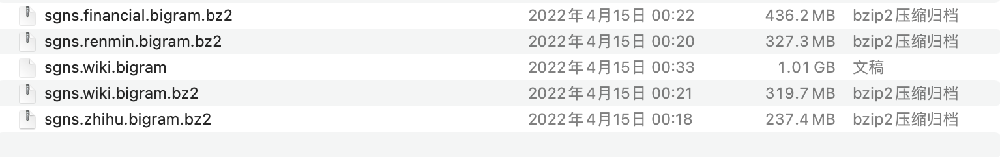

项目地址
https://github.com/Embedding/Chinese-Word-Vectors
Chinese-Word-Vectors项目提供超过100种中文词向量，其中包括不同的表示方式（稠密SGNS和稀疏PPMI）、不同的上下文特征（词、N元组、字等等）、以及不同的训练语料。获取预训练词向量非常方便，下载后即可用于下游任务。
参考文献
如果使用了本项目的词向量和CA8数据集请进行如下引用：
Shen Li, Zhe Zhao, Renfen Hu, Wensi Li, Tao Liu, Xiaoyong Du, Analogical Reasoning on Chinese Morphological and Semantic Relations, ACL 2018.
@InProceedings{P18-2023,
author = "Li, Shen
and Zhao, Zhe
and Hu, Renfen
and Li, Wensi
and Liu, Tao
and Du, Xiaoyong",
title = "Analogical Reasoning on Chinese Morphological and Semantic Relations",
booktitle = "Proceedings of the 56th Annual Meeting of the Association for Computational Linguistics (Volume 2: Short Papers)",
year = "2018",
publisher = "Association for Computational Linguistics",
pages = "138--143",
location = "Melbourne, Australia",
url = "http://aclweb.org/anthology/P18-2023"
}
不同领域
下列词向量基于不同的表示方式、不同的上下文特征以及不同领域的语料训练而成。
| Word2vec / Skip-Gram with Negative Sampling (SGNS) | ||||
| 语料 | 上下文特征 | |||
| 词 | 词 + N元组 | 词 + 字 | 词 + 字 + N元组 | |
| Baidu Encyclopedia 百度百科 | 300d | 300d | 300d | 300d / PWD: 5555 |
| Wikipedia_zh 中文维基百科 | 300d | 300d | 300d | 300d |
| People's Daily News 人民日报 | 300d | 300d | 300d | 300d |
| Sogou News 搜狗新闻 | 300d | 300d | 300d | 300d |
| Financial News 金融新闻 | 300d | 300d | 300d | 300d |
| Zhihu_QA 知乎问答 | 300d | 300d | 300d | 300d |
| Weibo 微博 | 300d | 300d | 300d | 300d |
| Literature 文学作品 | 300d | 300d / PWD: z5b4 | 300d | 300d / PWD: yenb |
| Complete Library in Four Sections 四库全书* |
300d | 300d | NAN | NAN |
| Mixed-large 综合 Baidu Netdisk / Google Drive |
300d 300d |
300d 300d |
300d 300d |
300d 300d |
| Positive Pointwise Mutual Information (PPMI) | ||||
| 语料 | 上下文特征 | |||
| 词 | 词 + N元组 | 词 + 字 | 词 + 字 + N元组 | |
| Baidu Encyclopedia 百度百科 | Sparse | Sparse | Sparse | Sparse |
| Wikipedia_zh 中文维基百科 | Sparse | Sparse | Sparse | Sparse |
| People's Daily News 人民日报 | Sparse | Sparse | Sparse | Sparse |
| Sogou News 搜狗新闻 | Sparse | Sparse | Sparse | Sparse |
| Financial News 金融新闻 | Sparse | Sparse | Sparse | Sparse |
| Zhihu_QA 知乎问答 | Sparse | Sparse | Sparse | Sparse |
| Weibo 微博 | Sparse | Sparse | Sparse | Sparse |
| Literature 文学作品 | Sparse | Sparse | Sparse | Sparse |
| Complete Library in Four Sections 四库全书* |
Sparse | Sparse | NAN | NAN |
| Mixed-large 综合 | Sparse | Sparse | Sparse | Sparse |
*由于古汉语中绝大部份词均为单字词，因此只需字向量。
语料
项目花费了大量精力来收集了来自多个领域的语料。所有的文本数据均移除了html和xml标记，仅保留了纯文本。之后采用了HanLP(v_1.5.3)对文本进行了分词。此外，我们将繁体中文用Open Chinese Convert (OpenCC)转换为了简体中文。更详细的语料信息如下所示：
| 语料 | 大小 | 词数量 | 词汇量 | 详情 |
| Baidu Encyclopedia 百度百科 |
4.1G | 745M | 5422K | 中文百科 https://baike.baidu.com/ |
| Wikipedia_zh 中文维基百科 |
1.3G | 223M | 2129K | 中文维基百科 https://dumps.wikimedia.org/ |
| People's Daily News 人民日报 |
3.9G | 668M | 1664K | 人民日报新闻数据(1946-2017) http://data.people.com.cn/ |
| Sogou News 搜狗新闻 |
3.7G | 649M | 1226K | Sogou labs的新闻数据 http://www.sogou.com/labs/ |
| Financial News 金融新闻 |
6.2G | 1055M | 2785K | 从多个网站收集到的金融新闻 |
| Zhihu_QA 知乎问答 |
2.1G | 384M | 1117K | 中文问答数据 https://www.zhihu.com/ |
| Weibo 微博 |
0.73G | 136M | 850K | NLPIR Lab提供的微博数据 http://www.nlpir.org/wordpress/download/weibo.7z |
| Literature 文学作品 |
0.93G | 177M | 702K | 8599篇现代文学作品 |
| Mixed-large 综合 |
22.6G | 4037M | 10653K | 上述所有数据的汇总 |
| Complete Library in Four Sections 四库全书 |
1.5G | 714M | 21.8K | 目前最大的古代文献汇总 |
导入模型(代码)
例如我下载了多个词模型，下载得到bz2结尾的文件名，例如sgns.financial.bigram.bz2。

使用方式
from gensim.models.keyedvectors import KeyedVectors
#以金融sgns.financial.bigram.bz2为例
model = KeyedVectors.load_word2vec_format('embeddings/sgns.financial.bigram.bz2',
binary=False,
unicode_errors='ignore')
model
Run
<gensim.models.keyedvectors.KeyedVectors at 0x7fe7fad79d60>
model.get_vector('投资')
Run
array([-0.084635, 0.890228, -0.23223 , -0.308985, 0.058241, 0.458777,
-0.152547, -0.413471, 0.269701, -0.078043, -0.4155 , 0.074735,
0.35714 , 0.103431, 0.601784, -0.390854, 0.814801, -0.122664,
-1.076744, 0.516941, -0.293319, -0.310251, -0.407794, 0.003898,
-0.210962, 0.378095, -0.345955, -0.223848, 0.700162, 0.207644,
0.426249, -0.272832, -0.110305, -0.701062, -0.173407, -0.172121,
-0.682592, 0.593414, 0.279591, -0.408284, -0.166693, 0.753402,
0.037375, 0.141865, -0.246024, -0.108663, -0.225255, -0.856601,
0.381026, 0.401248, 0.012108, -0.126305, -0.374255, 0.728795,
0.219549, -0.354029, -0.353131, 0.064867, 0.49565 , -0.503267,
-0.304075, 0.145036, 0.688948, 0.063382, -0.223243, 0.474251,
0.80543 , 0.683178, 0.118159, 0.408411, -0.020066, 0.009045,
-0.135446, -0.069633, 0.206357, 0.482845, -0.075307, 0.06433 ,
-0.112367, 0.011816, 0.87427 , -0.120287, -0.31036 , 0.369985,
0.560386, -0.215248, 0.389631, 0.042943, -0.319149, 0.951551,
-0.335188, 0.642246, -0.55546 , 0.322397, 0.659618, -0.213124,
0.346696, -0.342239, 0.31479 , 0.078533, -0.345148, 0.815577,
-0.530134, 0.303419, -0.158916, -0.190564, 0.436046, -0.112251,
-0.339966, 0.253645, 0.181076, 0.122875, -0.310951, -0.126253,
1.641405, 0.357906, 0.165796, 0.398656, -0.330591, 0.20328 ,
-0.077191, -0.421248, -0.078504, -0.734519, 0.146212, 0.535727,
0.014134, 0.040322, -0.44809 , -0.758205, -0.151237, 0.248258,
-0.319704, 0.656033, -0.518857, 0.932356, -1.01786 , -0.46354 ,
0.160921, -0.243597, 0.106666, -0.03404 , 0.010672, 0.260243,
0.899813, 0.171735, -0.108209, -0.009843, -0.18113 , 0.302494,
0.187285, 0.064669, -0.502041, -0.724377, -0.294312, -0.522256,
0.334543, 0.740455, -0.357653, 0.540747, 0.256146, 0.513839,
1.116628, -0.626111, 0.505574, 0.089774, -0.381137, -0.282352,
-0.457542, 0.198909, 0.313638, 0.560809, 0.25295 , 0.878158,
-0.289311, -0.629047, 0.011103, 0.041058, -0.291302, -0.014001,
-0.027697, -0.445817, -0.070086, 0.159816, -0.120071, 1.280489,
-0.108866, 0.01586 , -0.505574, -0.679772, -0.343165, 0.595633,
0.438108, -0.364066, -0.393667, 0.442285, 0.24979 , -0.191607,
0.425692, 0.535577, -0.480332, -0.737461, 0.588498, -0.380264,
0.151292, 0.077519, -0.221384, 0.699436, 0.401642, 0.509026,
-0.411141, 0.206719, -0.097051, -0.451834, -0.825617, 0.602984,
0.2853 , 0.46055 , 0.96472 , 0.322712, -0.373446, 0.207944,
0.236688, 0.566523, 0.037644, 1.241091, 0.025682, 0.373211,
0.097712, -0.195355, 0.264579, -0.072992, -0.121629, 0.041688,
0.213666, 0.329652, -0.015182, 0.396307, 0.117955, 0.119577,
-0.334761, -0.135917, 0.409983, 0.512367, -0.292204, 0.302897,
-0.325733, 0.383173, -0.92419 , -0.377535, -0.059801, -0.606275,
-0.240482, 0.054021, -0.581386, -0.555691, 0.158354, 0.103765,
0.107681, 0.248877, -0.597925, 0.193332, 0.844085, 0.00584 ,
0.041622, -0.111235, 0.617778, 0.234883, -0.09562 , 0.408324,
-0.107121, 0.717875, 0.674794, 0.127214, -0.178357, 0.331436,
0.417898, -0.650833, -0.428309, -0.576132, 0.210533, -0.057879,
-0.578397, 0.468586, 0.103365, -0.403216, -0.398776, 0.094514,
-0.130387, 0.628187, -0.463082, -0.951649, 0.561544, 0.118903,
0.448327, -0.171685, -0.672348, 0.069471, 0.556452, -0.335425],
dtype=float32)
model.similar_by_key('投资')
Run
[('长期投资', 0.5135656595230103),
('投资规模', 0.5089880228042603),
('智百扬', 0.49565914273262024),
('投资总额', 0.4955061078071594),
('洛辉', 0.489188551902771),
('337409', 0.48917514085769653),
('洛盛', 0.4819018244743347),
('洛腾', 0.4728960692882538),
('394150', 0.4704836308956146),
('投资额', 0.4685181975364685)]
model.similar_by_key('风险')
Run
[('提示', 0.6549968123435974),
('经营风险', 0.6316577792167664),
('景气衰退', 0.544153094291687),
('风险分析', 0.5439289212226868),
('遇宏观', 0.5435716509819031),
('信用风险', 0.5345730185508728),
('承受能力', 0.5291797518730164),
('防范', 0.5271924138069153),
('系统性', 0.5178108811378479),
('不确定性', 0.5173759460449219)]
向量运行效果还行，感兴趣的同学也可以根据自己的数据训练word2vec模型，训练及使用的办法参照文章